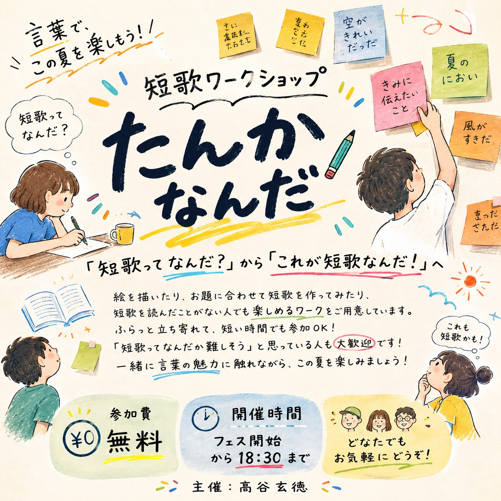

短歌って、たのしい。
絵を描いたり、お題に合わせて短歌を作ってみたり、短歌を読んだことがない人でも楽しめるワークをご用意しています。
ふらっと立ち寄れて、短い時間でも参加していただける内容です。「短歌ってなんだか難しそう」と思っている人も大歓迎です！
一緒に言葉の魅力に触れながら、この夏を楽しみましょう！
ことばを見つけて、五・七・五・七・七へ
「短歌ってなんだ？」から「これが短歌なんだ！」となる、短歌ワークショップです。

絵を描いたり、お題に合わせて短歌を作ってみたり、短歌を読んだことがない人でも楽しめるワークをご用意しています。
ふらっと立ち寄れて、短い時間でも参加していただける内容です。「短歌ってなんだか難しそう」と思っている人も大歓迎です！
一緒に言葉の魅力に触れながら、この夏を楽しみましょう！